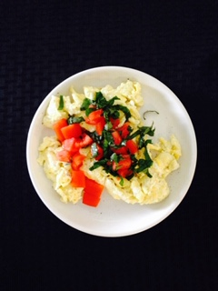
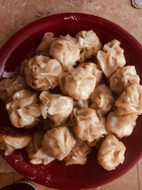
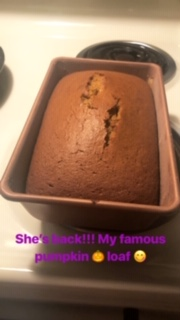

Everybody loves breakfast, right? I know some of you may be thinking not but it's my most favorite meal of the day. I could eat breakfast at any time of the day actually... but also, I like to keep it simple.
I am huge fan of asian foods! I probably eat this type of food at least 2-3 times a week and one of my go to's is Sesame Chicken.
Sesame Chicken
Pork Dumplings
As the fall season quickly approaches, about this time is when I start to bake my famous pumpkin bread. If you haven't tried it yet, you're missing out!
If you can't tell... I really enjoy cooking but also, I enjoy the simplicity of cooking from home and sharing it with the peoople I love the most!